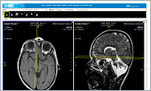
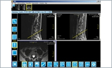
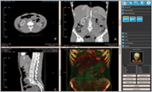
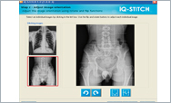
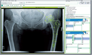
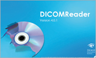

iQ-WEBX
iQ-WEBX is a
affordable, easy-to-use, and
complete solution for storage,
viewing and distribution of any
medical imaging studies and reports.
iQ-WEBX includes multiple
application in a single package: a
DICOM Server to enable to
communication between modalities and
the Archive Server, a Archive Server
to store up to 500 million images in
one database, a Web Server to allow
web-based distribution of any
medical images and/or reports, and
lastly a iQ-X Web Viewer which
provides an interactive diagnostic
web viewer with all clinically
required image processing features.
iQ-WebX

iQ-VIEW
iQ-VIEW is an easy-to use reading station that has been designed by radiologists
for radiologists.The software is available in two different versions: BASIC and PRO. The BASIC version was
developed as a reading station for all physicians, such as orthopedic surgeons, chiropractors,
veterinarians and internal specialists, while iQ-VIEW PRO is optimized for radiology and nuclear medicine requirements.
iQ-View Brochure

iQ-VIEW 3D
iQ-VIEW 3D is an optional module for iQ-VIEW or iQ-VIEW PRO.
It turns iQ-VIEW / PRO into a full-featured 3D workstation for virtually all kinds of 3D
image processing, e.g. for vascular, neuroradiological, traumatological, orthopaedic and
cardiac imaging. The iQ-VIEW 3D is a great module that offers easy 3D post-processing.
You might make use of multiple practical functions like orthogonal and oblique
multiplanar reconstructions (MPR), maximum and minimum intensity projections
(MIP and MinIP), surface shaded display (SSD) and volume rendering (VRT).
iQ-View 3D Brochure

iQ-STITCH
iQ-STITCH is the ideal tool to merge several related radiographies to one image.
iQ-STITCH works with every X-ray vendor and can be used as a standalone application with any PACS,
or rather, as an integrated tool of iQ-VIEW or the iQ-CR ACE acquisition station.
iQ-Stitch Brochure

iQ-CAPTURE
iQ-CAPTURE is an optional hardware package for iQ-VIEW PRO.
The implementation is easy and fast. An authorized dealer connects a loop through
the video monitor to the capture hardware, which is plugged into a standard Microsoft Windows compatible PC.
Medical operators can easily capture any images using the iQ-VIEW PRO software with the included foot switch
or the computer mouse. Demographic data of the captured images can either be entered manually, copied from
existing data or requested from a DICOM MODALITY WORKLIST source.
iQ-Capture Brochure
iQ-RIS
iQ-RIS is a flexible radiology information system, which can be easily customized to
meet the requirements of any hospital or imaging center. Representing the next generation of radiology information
systems, iQ-RIS offers superb tools for the optimization of the radiological workflow and allows an integration with
almost any PACS. Since iQ-RIS is available as a modular system, it can be flexibly adapted to the individual needs
of any radiology practice. Even the most basic version of iQ-RIS includes already a number of valuable features to
manage the radiological workflow in an optimal way.
iQ-RIS Brochure
iQ-RIS Demo
Video 1 (Scheduling Appointments)
iQ-RIS Demo
Video 3 (Workflow Management)

OrthoView™
The OrthoView™ module offers orthopedic surgeons in a filmless environment a quick
and accurate templating solution, integrated into an orthopedic PACS. The whole templating process
can be done quickly and easily in four steps – doing the scaling, planning, templating and
reporting. The module supports all major joints from more than 30 joint manufactures and over
1000 international templates.
OrthoView™ Brochure

DICOM Reader
TiQ-VIEW 3D is an optional module for iQ-VIEW or iQ-VIEW PRO.
It turns iQ-VIEW / PRO into a full-featured 3D workstation for virtually all kinds of 3D
image processing, e.g. for vascular, neuroradiological, traumatological, orthopaedic and
cardiac imaging. The iQ-VIEW 3D is a great module that offers easy 3D post-processing.
You might make use of multiple practical functions like orthogonal and oblique
multiplanar reconstructions (MPR), maximum and minimum intensity projections
(MIP and MinIP), surface shaded display (SSD) and volume rendering (VRT).
DICOMReader Brochure